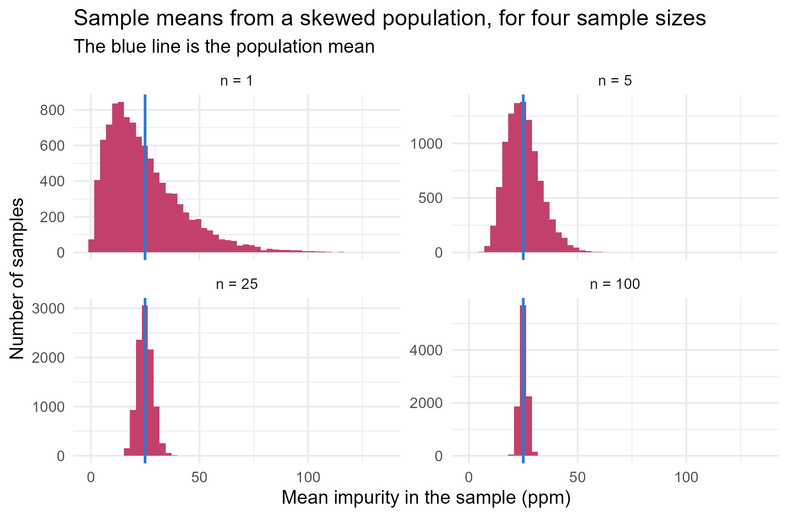

Module 0 · Lesson 11 of 14 Week 11 of 160 About 5–7 hours
Sampling distributions and the CLT
How much would the answer change with a different sample?
Distinguish parameters from statistics, simulate sampling distributions, compute standard errors, and use the law of large numbers and the central limit theorem.
The lab analyzes 25 drums from a delivery of 100,000 and finds a mean impurity of 19 ppm. Would another 25 drums give 19 ppm too? Almost certainly not: maybe 24, maybe 31. Every statistic computed from a sample would come out differently with a different sample. This lesson studies that variability itself. It’s the most important idea in this module, because it’s what lets you say how far a sample result is likely to be from the truth. Confidence intervals and hypothesis tests, in the next two lessons, are built directly on it.
This lesson has a “wow” moment: you’ll watch a lopsided, messy distribution turn into a perfect bell curve, just by averaging. It’s called the central limit theorem, and it’s the reason the normal distribution shows up everywhere.
In this lesson you’ll:
- tell a population parameter apart from a sample statistic
- simulate a sampling distribution
- compute standard errors for means and proportions
- see the law of large numbers at work
- use the central limit theorem, and judge when it applies
Populations, samples, parameters and statistics
The population is everything you want to learn about: all the drums in a delivery, every bag a filler will ever produce, all the batches a reactor could run. You usually can’t measure all of it, so you measure a sample. A number describing the population is a parameter, and the matching number computed from the sample is a statistic, which estimates it.
| Population (parameter) | Sample (statistic) | |
|---|---|---|
| Mean | \mu | \bar{x} |
| Standard deviation | \sigma | s |
| Proportion | p | \hat{p} (“p-hat”) |
Parameters are fixed but unknown. Statistics are known, but they vary from sample to sample. For a statistic to tell you about the population, the sample must be random: every member of the population must have a known chance of being chosen, so that no part of it is systematically over- or under-represented.
WarningA huge sample doesn’t fix a biased one
If you take every sample from the top of a tank that hasn’t been mixed, a thousand samples will tell you very precisely about the top layer, and nothing at all about the bottom. Size can’t cure bias. The most famous example is the Literary Digest magazine, which polled about 2.4 million Americans in 1936 and predicted the wrong winner of the presidential election by a landslide, because its sample came mostly from wealthier households. A random sample of a few thousand would have done better.
A population you can see
To study sampling, it helps to have a population whose parameters you know. Here’s a made-up population: the impurity levels of 100,000 drums, in ppm. It’s right-skewed: most drums are fairly clean, and a few are quite contaminated.
set.seed(11)
population <- rgamma(100000, shape = 2, scale = 12.5) # a skewed, positive distribution
mu <- mean(population)
sigma <- sd(population)
c(mu = mu, sigma = sigma)
#> mu sigma
#> 24.97653 17.58144rgamma() draws from the gamma distribution, a flexible family for positive, skewed quantities that you’ll meet in Module 5. Now take one random sample of 25 drums:
one_sample <- sample(population, 25)
mean(one_sample)
#> [1] 18.90201The sample mean isn’t exactly \mu, and another sample would give yet another value.
The sampling distribution
Imagine taking every possible sample of 25 drums and computing \bar{x} for each one. The distribution of all those means is the sampling distribution of \bar{x}. You can’t take every sample, but you can take 10,000, which is close enough:
means_25 <- replicate(10000, mean(sample(population, 25)))
c(mean_of_means = mean(means_25), sd_of_means = sd(means_25))
#> mean_of_means sd_of_means
#> 25.007907 3.499725Compare these with the population:
- The means are centered on \mu: on average, \bar{x} hits the target. That makes \bar{x} an unbiased estimator of \mu.
- They’re far less spread out than individual drums: their SD is about 3.5 ppm, against 17.6 for single drums. Averaging cancels out much of the drum-to-drum variation.
- Their shape is close to normal, even though the population is strongly skewed.
Show the code
sims <- do.call(rbind, lapply(c(1, 5, 25, 100), function(n) {
data.frame(n = paste("n =", n), xbar = replicate(10000, mean(sample(population, n))))
}))
sims$n <- factor(sims$n, levels = paste("n =", c(1, 5, 25, 100)))
ggplot(sims, aes(x = xbar)) +
geom_histogram(bins = 50, fill = "#C2416C", color = NA) +
geom_vline(xintercept = mu, color = "#2a78d6", linewidth = 0.8) +
facet_wrap(~ n, scales = "free_y") +
labs(title = "Sample means from a skewed population, for four sample sizes",
subtitle = "The blue line is the population mean",
x = "Mean impurity in the sample (ppm)", y = "Number of samples") +
theme_minimal(base_size = 12)
With n = 1, the “sample mean” is just one drum, and its distribution has the population’s skewed shape. As n grows, the sampling distribution narrows around \mu and becomes more and more bell-shaped. Those two facts are the law of large numbers and the central limit theorem.
The standard error
The standard deviation of a sampling distribution is called the standard error (SE) of the statistic. For the sample mean,
\text{SE}(\bar{x}) = \frac{\sigma}{\sqrt{n}} .
Check it against the simulation:
sigma / sqrt(25)
#> [1] 3.516288
sd(means_25)
#> [1] 3.499725In practice you don’t know \sigma, so you estimate the standard error with the sample standard deviation: \text{SE} \approx s / \sqrt{n}. For the mean yield of our 40 reactor batches:
batches <- read.csv("data/reactor_batches.csv")
sd(batches$yield_pct) / sqrt(nrow(batches))
#> [1] 1.541528So the average yield of 57.6% is uncertain by about 1.5 percentage points.
Keep the two ideas apart. The standard deviation describes how much individual drums or batches vary. The standard error describes how much a statistic would vary from sample to sample: it measures the statistic’s precision.
Because of the square root, precision improves slowly. To halve the standard error, you need four times as many observations:
| Sample size n | 25 | 100 | 400 | 1,600 |
|---|---|---|---|---|
| \text{SE} = \sigma / \sqrt{n} (with \sigma = 17.6) | 3.52 | 1.76 | 0.88 | 0.44 |
That’s why labs often run measurements in replicate: four replicates halve the uncertainty of a single measurement.
NoteGo deeper: where σ/√n comes from
Let X_1, \dots, X_n be independent draws from a population with mean \mu and variance \sigma^2. Using the rules from Lesson 9,
E(\bar{X}) = \frac{1}{n}\sum_{i=1}^n E(X_i) = \frac{1}{n}\cdot n\mu = \mu , \qquad \text{Var}(\bar{X}) = \frac{1}{n^2}\sum_{i=1}^n \text{Var}(X_i) = \frac{1}{n^2}\cdot n\sigma^2 = \frac{\sigma^2}{n} .
The second step needs independence, so that the variances add. Taking the square root gives \text{SE}(\bar{X}) = \sigma/\sqrt{n}. Strictly speaking, sampling without replacement from a finite population makes the draws slightly dependent, but the correction is negligible when the sample is a small fraction of the population.
Your turn. Bag weights have a standard deviation of \sigma = 0.3 kg. What’s the standard error of the mean weight of 9 bags?
\text{SE} = \sigma / \sqrt{n}.
0.3 / sqrt(9)Your turn. How many bags do you need to weigh for the standard error to be 0.05 kg?
Solve 0.3/\sqrt{n} = 0.05 for n: \sqrt{n} = 0.3/0.05.
(0.3 / 0.05)^2Your turn: simulate it. A concentration is measured with an SD of 4 mg/L around its true value of 100 mg/L, and the lab reports the mean of 4 replicates. Simulate 5,000 such reports, and return the standard deviation of the reported means. What does the formula predict?
Inside mean(), draw one set of replicates with rnorm(4, mean = 100, sd = 4).
set.seed(4)
means <- replicate(5000, mean(rnorm(4, mean = 100, sd = 4)))
sd(means)The formula gives 4/\sqrt{4} = 2 mg/L.
The law of large numbers
As the sample size grows, the sample mean gets closer and closer to the population mean. That’s the law of large numbers, and the standard error says how fast: the typical error shrinks like 1/\sqrt{n}. It’s why the coin-flip proportion in Lesson 8 settled down, and why simulation works: more repetitions give more accurate estimates.
It does not say that chance “evens out” in the short run. After five heads in a row, the next flip is still 50:50. The law works by swamping early streaks with lots of later flips, not by correcting them. Believing otherwise is called the gambler’s fallacy.
A plant-floor version: if batches are truly independent, three off-spec batches in a row don’t make a good one “due”. But in a real plant, three bad batches in a row usually mean something has changed, so the independence assumption itself is the thing to question. Go and investigate!
The central limit theorem
The central limit theorem (CLT) is one of the most remarkable results in mathematics:
For a random sample of size n from any population with mean \mu and standard deviation \sigma, the sampling distribution of \bar{x} is approximately normal, N(\mu, \sigma/\sqrt{n}), when n is large.
The population can have any shape (skewed, lumpy, discrete), as long as \sigma is finite. That’s why normal distributions appear everywhere in statistics: most methods work with averages or sums, and those are approximately normal.
How large must n be? It depends on the population:
- If the population is close to normal, the CLT works well even for small samples.
- For moderate skew, n \ge 30 is a common rule of thumb.
- For strong skew or extreme outliers, you may need many more. When in doubt, check by simulation.
The CLT lets you compute probabilities about a sample mean with pnorm(). What’s the chance that the mean impurity of 25 drums comes out above 30 ppm?
1 - pnorm(30, mean = mu, sd = sigma / sqrt(25)) # by the CLT
#> [1] 0.07655564
mean(means_25 > 30) # by simulation
#> [1] 0.0827The two agree reasonably well. The small difference is because, with this skewed population and only n = 25, the sampling distribution is still slightly skewed itself.
Try n <- 1, n <- 30 and n <- 200. You can also swap in something lumpy, like c(rnorm(50000, 20, 3), rnorm(50000, 40, 3)).
Your turn. Bags have a mean weight of 25 kg and an SD of 0.3 kg. A pallet holds 40 bags. What’s the probability that the average bag on a pallet weighs less than 24.9 kg?
By the CLT, the average of 40 bags is approximately normal, with mean 25 and SD 0.3/\sqrt{40}.
pnorm(24.9, mean = 25, sd = 0.3 / sqrt(40))About 0.018. A single bag below 24.9 kg is common, but a whole pallet averaging that low is rare.
Your turn: a skewed population. Pump lifetimes are exponential, with a mean of 2,000 hours (so the SD is also 2,000). For a fleet of 50 pumps, use the CLT to approximate the probability that their average lifetime is below 1,800 hours.
The standard error is 2000/\sqrt{50}. Then use pnorm() for the lower tail.
pnorm(1800, mean = 2000, sd = 2000 / sqrt(50))Sample proportions
A proportion is a mean of 0s and 1s (Lesson 2), so everything above applies to it. If a fraction p of the population has some property, the sample proportion \hat{p} from a random sample of size n has
E(\hat{p}) = p, \qquad \text{SE}(\hat{p}) = \sqrt{\frac{p(1-p)}{n}} ,
and it’s approximately normal when the sample contains enough of both outcomes. The usual check is the success–failure condition: np \ge 10 and n(1-p) \ge 10.
Say 4% of all drums leak, and QC inspects 500 of them:
p <- 0.04
n <- 500
se <- sqrt(p * (1 - p) / n)
se
#> [1] 0.008763561
set.seed(2)
p_hat <- rbinom(10000, size = n, prob = p) / n # 10,000 simulated inspections
sd(p_hat)
#> [1] 0.008832803
mean(abs(p_hat - p) < 1.96 * se)
#> [1] 0.9472The standard error is just under 0.9 percentage points, so about 95% of inspections land within about 1.7 points of the true leak rate. That’s also where the “margin of error of plus or minus 3 points” quoted with opinion polls of about 1,000 people comes from.
Your turn. The true leak rate is 4%. In an inspection of 500 drums, what’s the probability that the sample shows a leak rate above 6%?
\hat{p} is approximately normal with mean 0.04 and SD \sqrt{0.04 \times 0.96/500}.
1 - pnorm(0.06, mean = 0.04, sd = sqrt(0.04 * 0.96 / 500))About 1.1%. So if an inspection does find more than 6% leaking, that’s a strong hint that the true rate has gone up.
Your turn. A rare defect affects 1% of products. For a sample of 300, check the success–failure condition. Return TRUE if it holds.
Both np \ge 10 and n(1-p) \ge 10 must hold. Combine them with &.
p <- 0.01
n <- 300
n * p >= 10 & n * (1 - p) >= 10We’d expect only 3 defects, so the sampling distribution of \hat{p} is too skewed for a normal approximation. For rare events, use the binomial (or Poisson) directly.
Other statistics have sampling distributions too
Medians, standard deviations, correlations and regression slopes all vary from sample to sample, and each one has a sampling distribution and a standard error. For some there’s a formula. For all of them, simulation works: draw lots of samples, compute the statistic each time, and look at the spread. With real data you don’t have the population to sample from, but a clever trick called the bootstrap resamples the sample itself. You’ll get a taste of it in the next lesson, and study it properly in Module 4.
Challenge round
Challenge 1 · Mean or median? For a normal population, both the sample mean and the sample median estimate the center. Which is more precise? Simulate 5,000 samples of size 25 from a standard normal, and return sd(medians) / sd(means).
Just like means, but with median() instead of mean().
set.seed(5)
means <- replicate(5000, mean(rnorm(25)))
medians <- replicate(5000, median(rnorm(25)))
sd(medians) / sd(means)The median’s standard error is about 25% larger, so for normal data the mean is the more precise estimator. For skewed data, or data with outliers like the contaminated sample in Lesson 7, the median can win. That’s a trade-off between efficiency and robustness, and it comes up again in Module 2.
Challenge 2 · Check the CLT by simulation. Is the CLT answer for the pump fleet any good? Simulate 10,000 fleets of 50 pumps, with exponential lifetimes of mean 2,000 hours, and estimate the probability that a fleet’s average lifetime is below 1,800 hours.
One fleet’s average lifetime is mean(rexp(50, rate = 1 / 2000)).
set.seed(8)
fleets <- replicate(10000, mean(rexp(50, rate = 1 / 2000)))
mean(fleets < 1800)About 0.246, against the CLT’s 0.240. Close, even for a population as skewed as the exponential.
Quick quiz
1. “The average impurity of every drum in a delivery” is…
It describes the whole population. The average of the 25 drums the lab tested would be a statistic that estimates it.
2. To cut the standard error in half, you need…
Because of the square root, \sigma/\sqrt{4n} = \frac{1}{2}\,\sigma/\sqrt{n}.
3. What does the central limit theorem say?
It’s about the distribution of the mean across samples, not about the data in one sample. A large sample from a skewed population still looks skewed.
4. A population is strongly right-skewed, and you take samples of size 5. What does the sampling distribution of \bar{x} look like?
With strong skew, n = 5 is far too small for the CLT to take full effect, as the four-panel figure shows.
5. What’s the difference between a standard deviation and a standard error?
For the mean, \text{SE} = \text{SD}/\sqrt{n}, so the standard error is smaller than the SD for any n > 1.
6. A coin has landed heads five times in a row. What’s the probability of heads on the next flip?
The flips are independent. The law of large numbers works by swamping streaks with lots of future flips, not by correcting them.
Wrap-up
This is the heart of statistics, and you’ve got it. Here’s what you can do now:
- Separate the two worlds: a parameter describes a population, and a statistic describes a sample. Statistics vary from sample to sample.
- Simulate: the sampling distribution of a statistic is its distribution over all possible samples, and simulation approximates it.
- Quantify precision: the sample mean is unbiased, with standard error \sigma/\sqrt{n}, estimated by s/\sqrt{n}. Quadrupling n halves it.
- Trust large samples: by the law of large numbers, \bar{x} gets closer to \mu as n grows. It doesn’t “correct” short-run streaks.
- Use the CLT: for large n, \bar{x} is approximately N(\mu, \sigma/\sqrt{n}) whatever the population’s shape. More skew needs a larger n.
- Handle proportions: \text{SE}(\hat{p}) = \sqrt{p(1-p)/n}, approximately normal when np \ge 10 and n(1-p) \ge 10.
- Sample randomly: a huge biased sample can be worse than a small random one.
TipPractice in RStudio (optional, about an hour)
Work in week11.R.
- A reusable simulator. Write
sampling_dist(population, n, reps = 5000, stat = mean), which returnsrepsvalues ofstat, each computed on a sample of sizen. Use it to reproduce this lesson’s four-panel figure for a population of your choice. - Real data as a population. Treat the 40 batch yields as a small population. Draw 5,000 samples of size 5, 10 and 20 without replacement, and compare the SD of the sample means with \sigma/\sqrt{n}. Does the formula still work when you sample half the population? (Look up the “finite population correction”.)
- A lumpy population. Old Faithful’s eruption durations (
faithful$eruptions) are bimodal. How large must n be before the sample means look normal? Use histograms and Q-Q plots. - Other statistics. Simulate the sampling distributions of the standard deviation and of the maximum, for samples of 25 from a normal population. Which looks normal, and which doesn’t?
NoteKey words from this lesson
- Population and sample
- Everything you want to learn about, and the part of it you actually observe.
- Parameter and statistic
- A number describing a population (like \mu), and the matching number computed from a sample (like \bar{x}).
- Random sample
- A sample in which every member of the population has a known chance of being chosen.
- Sampling distribution
- The distribution of a statistic over all possible samples of a given size.
- Unbiased estimator
- A statistic whose sampling distribution is centered on the parameter it estimates.
- Standard error
- The standard deviation of a statistic’s sampling distribution: a measure of its precision.
- Law of large numbers
- As the sample size grows, sample means get closer to the population mean.
- Central limit theorem
- For large samples, the sampling distribution of the mean is approximately normal, whatever the population’s shape.
NoteWant to read more?
- Introduction to Modern Statistics, “Inference with mathematical models”. The central limit theorem and the normal model, as they’re used in practice.
- Seeing Theory, “Probability Distributions”. Its last section lets you watch the central limit theorem happen.